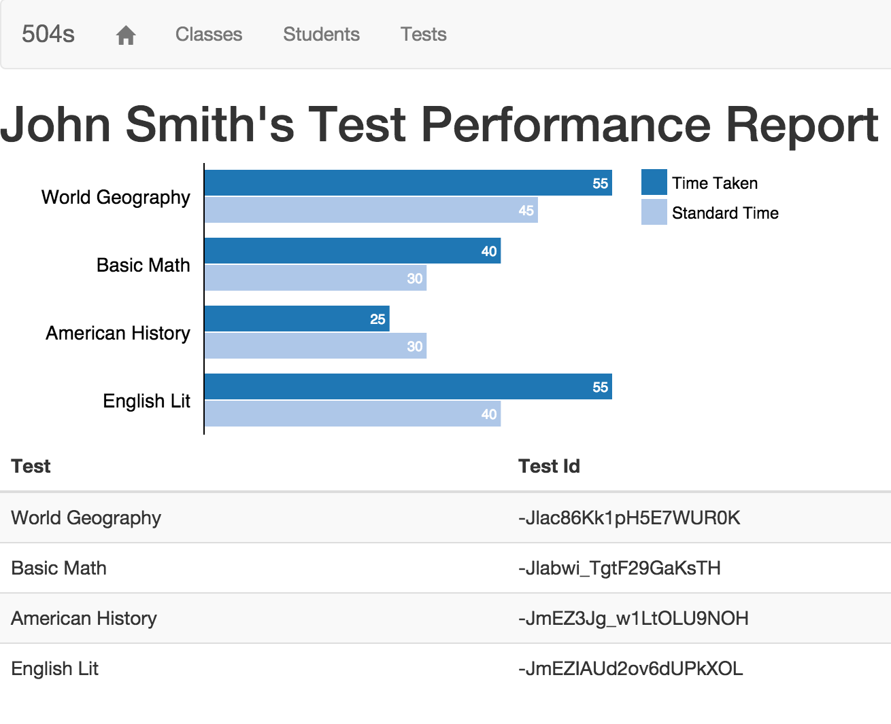
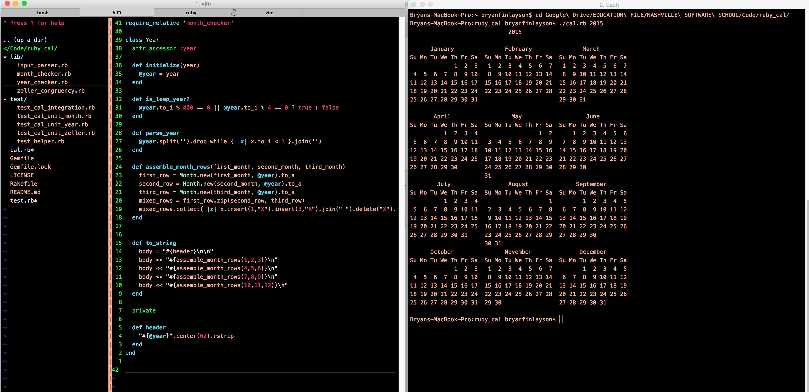

Projects
The projects below are a sample of my professional work as an apprentice software developer at the Nashville Software School.

504-Anecdotals
- View source code on Github
- Take a test drive
- See the slideshow
My 504-Anecdotals app is designed for special education teachers who need an easy way to track student time taken on tests and for supporting the 504 process for test time extensions. The app was built for my girlfriend, who is a special education teacher. 504-Anecdotals was my Nashville Software School capstone for the first half of the program covering the front-end stack (Javascript, HTML, and CSS). The app uses Firebase as a backend. The front-end MVC framework was built using Angularjs. The charts were built using the D3 library.

Ruby Cal
- View source code on Github
The Ruby Cal project was my implementation of a subset of the Unix program, cal. Written in pure Ruby, I took a TDD approach to my implementation of the app using high-level integration tests and low-level unit tests. This project was part of Nashville Software School's Unit One capstone. Objectives included:
- Practice with Arrays, Hashes, and Strings
- Develop the logic of a non-trivial algorithm
- Programming to meet a (changing) specification